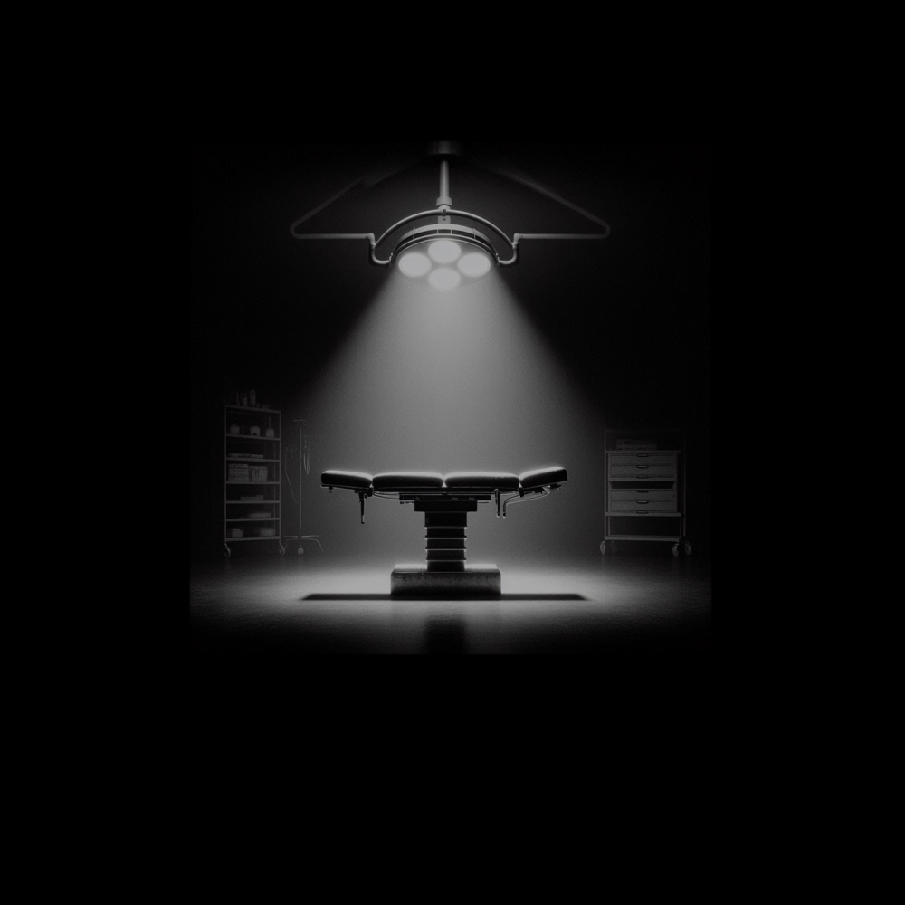

Cathode Reality Tales
Story 1- "Dystopia"
(written by: Louis Anthony)
In a dimly lit room, the only source of light is the flickering of an old television set casting eerie shadows along the walls. The screen crackles to life revealing a figure upon the screen shrouded in a haze of static and smoke. “Welcome, viewers, to Cathode Reality Tales.” The voice was smooth, almost hypnotic. The figure stepped closer, and the static resolved into the form of a middle-aged man dressed in a sleek, dark suit.
“Tonight,” the man continued, his eyes piercing through the screen, “we peel back the layers of your screen to reveal a world where reality twists and turns, and the familiar becomes the grotesque. I am your guide, Ray Toob. Join me as we explore a story that lurks just beyond the static, into the unknown, where perfection is a mask, memories are fleeting, and silence... is anything but golden.”
Ray paused, letting the weight of his words sink in. “*Our story... begins...”
- - - -
As the last echoes of his voice faded, the scene shifted to a rather raucous morning. The markets were bustling, and the city was vibrant and glowing. In a small alley on the northwest side of town, a man opened his eyes slowly. Vision blurry at first, but it slowly cleared for the man. His head pounded as his mind scrambled to make sense of things. He didn't know anything other than his whole body hurt. He tried to think about who he was, where he was, how he got there, where he came from, anything in his life from before this moment in time...
But there was nothing.
It was just an empty void filled with body-racking spasms of pain. There was nothing available in his mind to tell him anything substantial. He curled himself into a ball in the small dark alleyway and rocked back and forth for a moment, trying to calm himself down.
"Hey, are you okay?" a voice suddenly shouted.
The man looked around for where the voice was coming from and found some people standing at the end of the alleyway, looking at him.
"Buddy? You all good?" The man shouted again.
The man in the alley held up his hand towards the on-lookers. The man who shouted shrugged and walked off, most of the on-lookers followed, except for one small teenager who lingered a bit longer before rejoining the passing crowds.
The man slowly got to his feet, looking down at his clothes. He seemed similarly dressed to the onlookers. He checked his pockets, they were all empty. He slowly exited the alley and had to shield his eyes from a brilliant light in the sky. He looked around and still had no ideas at all. No clue where he was, who he was, or anything.
Across the street, he saw a bar, the name felt familiar but it wasn't open. He asked some random passers-by but was insulted by most of them. Eventually, a kind lady answered him that it would be a few hours. He thanked her, and she offered him a meal. He felt his stomach rumble at the mention of food and he gladly accepted quickly.
The kind old woman chuckled at his repeated graciousness and asked him to accompany her. He happily followed her, even offering to carry her bags about two blocks and into a small upstairs apartment. Once inside she directed him to sit, and she made him a rolled omelette. Something about it turned his stomach, but he couldn't figure out what without his memories.
The man finished his meal, thanked the woman, and asked if there was anything he could do for her. She smiled, thanked him, and asked him if he could pick up her prescription from the drugstore, which was two blocks in the other direction from the market she was coming from when she met him. He again thanked her graciously and headed off on the errand.
As he walked he looked at the money in his hand. He was almost at the drugstore when he heard a voice shout out to him, "You want to keep that?"
The man looked around for where the voice was coming from.
"You want to keep that?" The voice repeated, and the man on the mission saw another man step out of an alleyway. This new man was wearing a similar outfit to the first and everyone else, except for a dark jacket over top of it, and a striking orange haircut. When the orange-haired man saw the man holding the money's face, his expression changed, "ERIC! OH MY GOD MAN! It's me, Curtis."
The man holding the money, looked around uncertain if the orange-haired Curtis was speaking to him at first. It wasn't until Curtis got within arm's reach that the man was sure Curtis was speaking to him. "What," The man with the money said, still uncertain.
"Eric, dude, look if you want to keep that money, you don't go walking around with it in the open like that," Curtis said and ushered the money into Eric's pocket.
"Eric?" he asked. He tried to think of Curtis, but his mind was still empty, the name Eric however had a very strange high-pitched ringing tone the first time he heard it that had now slowly become a faint echo in his mind, as if he had heard it innumerable times before.
Curtis stopped and looked at the grimacing Eric. He then spoke with a solemn seriousness. "Whoa... You've lost your memory... You don't remember what happened? I thought you were just still ripped..."
Eric shook his head and stuttered softly, "N-no. I- I don't know anything."
Curtis inhaled sharply. "That's heavy." There was a pause before Curtis spoke again, "Is there some way I can help you out, man?"
Eric told Curtis about waking up in the alley and the kind lady. Curtis agreed that he should help her out and repay her kindness by finishing her errand, but that he could meet him at the bar later to talk it out. The same bar he saw earlier.
Eric nodded to Curtis who headed off towards the bar. Eric entered the drugstore and the woman behind the counter seemed very wary of him when he approached her. He spoke as softly as he could when he asked about the old lady's prescription, thinking perhaps she was afraid of him, but then her expression changed and she didn't look afraid.
Now she looked like she was fighting back her anger as she responded to hold on a moment. She left and then returned with the prescription and when she handed it to Eric he noticed a tattoo on her hand that reminded him of an eye. Suddenly he heard that loud high-pitched ringing again, and he saw a name in his mind. He blurted it out, "Cleopatra."
The woman became incensed and started shouting ANGRILY at him in a foreign language. He didn't know exactly what she was saying, but he understood that he was not wanted here anymore. He quickly ducked out of the drugstore and headed back to the old woman. He told her about his experience, at the drugstore but she seemed to just play it off as insignificant.
The old lady tried to tell him that he shouldn't even worry about going to meet Curtis, that he could just stay here and help her, and take care of her until he found himself a nice young woman. She tried to politely convince him that he had been handed a blessing in having his memories taken away and that he could use it to start any life for himself that he wanted.
He found himself entertaining the thought for a moment, but ultimately he decided to thank her for her kindness and decline her offer. He can't help but feel like Curtis could help him with a breakthrough in his identity. Perhaps he could even explain the incident at the drugstore. The old woman watched him leave, a look of quiet resignation on her face. She knew that once the call of the unknown had taken root, there was no swaying it. As Eric stepped out into the bustling streets once more, he could almost feel her eyes on his back, a silent wish for his safety lingering in the air.
At the bar, Eric noticed the name again, and again it struck him as eerily familiar. "Elsinore Tavern," Eric said quietly, and suddenly strange flashes of memory fragments assaulted his mind. He closed his eyes and tried to pick anything out, but the memories ended almost as soon as they began. The soreness in his body had faded at least, but now his head throbbed lightly.
Eric took a deep breath and stepped inside, the dim light and smoky air wrapping around him like an old, uncomfortable cloak. Curtis was already there, waiting at a secluded table. He waved Eric over with a smile that seemed too easy, too practiced. With every step, Eric felt a growing sense of unease. When he was almost to the table he felt like every eye in the bar was on him. Despite the music and the dark and gritty atmosphere he couldn't help but feel like he was the belle of the ball.
"You okay mate, you look positively spooked," Curtis said as Eric reached the table.
Eric sat down, head still a little sore, "Yeah, no, I dunno... I still have no idea about anything man. I also feel like everyone is staring at me."
Curtis laughed, "Nobody is staring at you."
"Can I get you something, sir?" A waitress who snuck up to the table without Eric noticing said, startling him.
"GYAH!" Eric jumped and exclaimed.
"Jeez you're jumpy," Curtis laughed, joking at his friend before answering the waitress, Just bring him a water doll," he said and she left with a smile.
Eric exhaled sharply "I just told you I felt like everyone was staring at me and then she's right there in my face."
Curtis was still laughing, "I'm sorry, dude. Man... I haven't seen you since we shut this place down last night... You were a wildman."
Eric grimaced trying to remember anything, but it was still a throbbing void. "Nothing..." Eric said and paused a moment. "Look... Other than this bar... where are we? And how do we know each other?"
Curtis seemed to be scrutinizing Eric and trying to calculate his words carefully as Eric spoke. When Eric finished Curtis leaned back, his eyes narrowing slightly as he gauged Eric’s reaction. “We’re in Creston IV, mate. This city is our playground. We’ve known each other for ages—partied together, worked together, you name it.”
Eric frowned, trying to pull any thread of memory from the void. “But why don’t I remember any of it?”
Curtis’s smile faltered for just a moment, a flicker of something darker in his gaze. “You had a rough night. Sometimes... the mind plays tricks on us. Best not to overthink it.”
The waitress returned with a glass of water, and Curtis deftly changed the subject. “Here, drink up. You’ll feel better. Tell me about this lady who helped you out. Sounds like a saint in this city.”
Eric took a sip, feeling the cool liquid soothe his dry throat. “She was nice. Gave me some food, and asked me to run an errand. But at the drugstore, I saw this tattoo, and it triggered something. I remembered a name... Cleopatra, and when I said it the woman with the tattoo freaked out."
Curtis’s eyes flickered with recognition, but his face remained impassive. “Strange. Maybe it’s just a coincidence.”
Eric wasn’t convinced, "Yeah, maybe," Eric said and stood up.
Curtis grew concerned and sat up, "Where you going?"
Eric arched an eyebrow, "I was gonna use the bathroom, why? Do you need to know if it's one or two?"
Curtis relaxed with a chuckle, "Well I don't need you losing your way again." After a couple of steps, Curtis called after Eric jokingly, "Hurry back, I miss you already."
Eric pushed open the door to the dimly lit restroom, its walls covered in graffiti. The stench was foul. He wanted to just hurry up and be done here. As he finished at the urinal, a particular symbol caught his eye. On the grim expanse of the stall wall, scrawled in faint streaks of fading red ink, was a strange and haunting symbol. A thin circle—perfect in shape—hovered in the emptiness, its outline delicate yet deliberate, as if traced by hands both patient and unhinged. An arc cut across one side of the circle, a crescent of shadow consuming a piece of the whole.
The image was stark and primal, a whisper of cosmic alignment like a solar eclipse glimpsed from a dying world. It felt ancient and modern at once, too symmetrical to be random, too simple to be accidental. Its lines were thin, purposeful, a mark left not to be art but to be noticed—etched quickly and confidently as if it belonged there as if it always had.
Suddenly, a sharp, high-pitched ringing filled his ears, and images began to assault his mind: an explosion, faces contorted in fear, and a man whispering the words "I love you."
Eric staggered and steadied himself against the sink, gasping for breath as the memories faded as quickly as they’d come. He looked at himself in the mirror, his face unrecognizable to himself, scars of different sizes and shapes all over his head and neck. His head throbbed, but his resolve solidified. There was something here—something he needed to uncover.
“So... the graffiti in the bathroom here... It's rather striking. There’s something you’re not telling me,” Eric said as he sat back down
Curtis sighed, leaning in closer, his voice dropping to a whisper. “Look, Creston IV isn’t just a city—it’s a fresh start. Everyone here has a past they’d rather forget. Maybe it’s best you do the same.”
Eric’s curiosity gnawed at him, but Curtis’s words planted a seed of doubt. Should he dig deeper into his past, or accept the life he had now?
Curtis’s easy smile returned. “How about we just enjoy tonight, yeah? No more digging up old ghosts.”
Eric nodded, but his mind was already working overtime. He had to know the truth, no matter the cost. "Hey, tell me more about myself. I know my name is Eric, but that's it. What's me last name? Where am I from?"
Curtis seemed almost happily taken aback, "Man, you must've hit your head REALLY hard on something-"
Eric cut him off, "I woke up in an alleyway across the street, so when you say I was a wild man... I start wondering... what happened to me?"
"Qutio. Your name is Eric Qutio. My name is Curtis Jadasio we go back... WAY back... like knee-high to some grasshoppers back."
Eric's mind was a speedway of cluttered thought and emotion. His mind was playing images without all of the data to those images, so there were holes and errors all over them. None of it made any sense. And then there was the memory of the man saying 'I Love you'. Eric leaned in. "Did I have a lover?"
Curtis almost spit his drink, but recovered and composed himself before Eric could catch it. "Yeah. Lots. You're a total ladies man."
Eric knew immediately that Curtis was lying now, "Are you sure about that?"
"Yeah, dude, positive," Curtis answered nonchalantly.
Eric's cold reserve was clear and present in his voice, "Then why do I remember a man telling me they love me, Curtis?"
There was a frozen moment of tense silence as the two men stared at each other. Still, every eye in the room felt like it was on the two of them. "Look man... I don't know all of your secrets. I just know we have been good friends for the majority of our lives, and something bad happened to you yesterday," Curtis finally spoke, in an almost remorseful tone. Eric looked down at the table, as Curtis sighed. "You're not okay, buddy. Should we take you to a hospital?"
Eric inhaled and considered the possibility, but his instincts told him he wouldn’t find answers in a hospital. He shook his head slowly. “No, Curtis. I need to understand what happened to me. I need the truth.”
Curtis’s expression tightened for a split second before he masked it with a concerned smile. “Alright, but let’s take it slow. Maybe a walk will clear your head.” He motioned for Eric to follow him outside.
The two men went for a walk, Curtis started heading towards the hospital, but Eric wasn't aware of that. "What did you mean earlier, when you said Creston IV was a fresh start?"
Curtis smiled and put his hands in his pockets, "I don't know if you noticed it dude, but this place is perfect. We have everything we need, there's no crime... and even when people don't like you, like that lady earlier, it's not a problem. You just go your own way."
Eric thought for a moment. "It sounds too good to be true, Curtis." Eric stopped walking. Curtis took a couple of steps before he noticed and turned back to face his friend. "I know you're hiding something from me."
Curtis's face contorted with desperation, his confident facade crumbling. His eyes, once steady and convincing, flickered with a growing unease. Lines of tension etched deeper into his forehead, and his lips tightened into a thin, strained line. The hint of a furrow between his brows betrayed his internal struggle.
"Tell me Curtis," Eric said taking a step towards his friend. "Tell me...the...truth."
Curtis's gaze wavered, his desperation palpable. “Eric, it's not that simple.”
Eric took another step closer. “I need to know. No more lies.”
Curtis's shoulders sagged, and he glanced around as if seeking an escape. Finally, he took a deep breath, resignation etched on his face. “Alright, Eric. But not here. Follow me.”
With that, Curtis turned and led Eric down a narrow, dimly lit alleyway. The further they walked, the more Eric's sense of unease grew. The alley opened up into an abandoned warehouse district, shadows stretching long and eerie under the sparse lighting.
Eric stopped in his tracks when he noticed the words smear painted to look like blood on one of the walls of a building beneath a flickering light, "REMEMBER CAPULET!"
"Capulet."
The word rang out in Eric's mind like a bell, with images of the man from earlier who said 'I love you'. This "Capulet" was Eric's lover.
"You okay?" Curtis asked when he realized Eric had stopped.
As the high pitched ringing noise faded from his head, Eric replied "Yeah, sorry. Just had a small flashback."
Curtis looks uncertain of that, but continued to lead Eric. Eventually, Curtis stopped in front of a large, dilapidated building and turned to face Eric. “This place used to be our hideout. Maybe being here will jog some of those memories.”
"Our hideout?" Eric was confused.
Curtis exhaled sharply and as calmly and cold as stone said one word, "Hamlet." Immediately a barrage of high-pitched ringing and memory fragments assaulted Eric's mind. As it subsided a moment later Curtis spoke another word, "Macbeth." Again, Eric's mind was assaulted with shattered fragments of memories. This time Curtis didn't wait for the flashback to subside, before spoke again. "Prospero, Othello, and Lear."
Again, a barrage of memory fragments crushed Eric, who by this point had crumpled to the ground. Curtis was kneeling beside him. The memories made little sense and Eric wasn't sure who was who or what was what. He remembered something about a revolution. Overthrowing a government, secret meetings, and... this hideout. Once the rush of everything calmed down in his mind, Eric exhaled.
"Sorry to do that to you... I really didn't want to," Curtis said full of remorse. "Do you know me now? Othello? Our compatriots, Cleopatra, Hamlet, Lear, Prospero, and Macbeth."
Eric whispered another name,"Capulet." He then looked at Curtis, breathing heavily, "This town... it's a prison... We're all people... branded criminals... and brainwashed to...to just think this place is a haven."
"It is though,"Curtis's face tightened further, the desperation now unmistakable. "It is a haven, Eric," he insisted, his voice cracking slightly. "It's better than what we had before. No war, no death, no suffering. Just peace, even if it’s a lie."
Eric’s breathing steadied, but his mind raced with the fragments of memory. "A lie isn't peace, Curtis. It’s just another kind of prison."
Curtis knelt beside Eric, his expression a mix of sorrow and urgency. “I didn’t want to hurt you, Eric. I didn’t want you to remember. The truth is painful, and this place, it’s meant to be a fresh start for all of us.”
Eric shook his head, struggling to stand. “A fresh start built on lies and control. That’s not living, Curtis. That’s just existing.”
Curtis sighed, the weight of his deception pressing down on him. “Please, Eric. Let it go. Forget the past and embrace the life we have here,” he said offering a hand to Eric.
Eric’s eyes burned with determination as he refused the hand. “I can’t. I need to know who I am, who we were. I can’t live a lie.”
Curtis’s face twisted with a final surge of desperation, but he knew the fight was lost. “Alright, Eric. But know that once you go down this path, there’s no turning back.”
The air between them grew heavy with the unspoken truth. Eric had made his choice, and Curtis’s role in this twisted reality was laid bare. The journey to uncovering the past had only just begun, and the cost of the truth would soon become clear.
Eric had regained his footing and his breathing had steadied. He had started to reserve himself to his former goals. Curtis unlocked the warehouse door and stepped aside.
Eric took a deep breath and stepped inside. The interior was dark and musty, filled with the echoes of long-forgotten memories. As they walked deeper into the warehouse, Curtis’s demeanor shifted, becoming colder, more calculated. Eric was busy trying to remember exactly what had happened here. But there was nothing. He couldn't remember this place at all.
Suddenly, Curtis stopped and turned to Eric, a syringe in hand. “I hoped you wouldn’t push this far, Eric. But you leave me no choice.”
Eric tried to react, but his body felt heavy and uncooperative. “Curtis, why?”
Curtis leaned in close as he administered the sedative, whispering into Eric's ear, “I am not what I am.” The world around Eric blurred and faded to black, leaving him with those haunting words echoing in his mind.
Eric woke up in a small, dimly lit room. He looked around, and tried to think if he was still in that warehouse when the familiar surroundings suddenly made his heart race—this was his old hideout, he recognized his room in the rebellion's secret hideout. It was now converted into a prison cell. He tried to speak but found himself unable to make a sound. Panic set in as he grasped at his mouth, it had been sewn shut. He tried to tear and break the seams but found himself unable to from the pain. His hands felt gingerly around his face and down to his neck where he found a painful, fresh incision on his neck. He recalled seeing a large scar there previously.
He closed his eyes and tried to calm down. He eventually sighed, opened his eyes, and began to sort through his old belongings, desperately searching for answers. Among the items, he found a list of the code names. His eyes widened as he noticed “Othello” was missing. A cold realization washed over him—Curtis had never been his friend. Then he saw it, the picture of 'Capulet'. He broke into tears as the flood of memories crushed him to his knees. Airon, the love of his life. They had joined up with a rebellion and had been victorious. They took Creston III, but they realized too late that it was a trap.
The door creaked open, and Curtis stepped inside, his expression cold and merciless. “This is the price of rebellion, Eric. Your past has caught up with you.”
Eric rushed towards him but was stopped a thick, unbreakable pane of glass that separated them. A look of fury and hatred crossed his brow. Curtis smiled, well out of reach behind the large paned glass. Eric angrily eyed Curtis up and down. Curtis was wearing a different outfit now. The letters B.A.M.F. are along the outer edge of a circle patch. Inside the patch were the words "Brighton Authority Military Force". The group of elites in charge of Creston.
“O brave new world, that has such people in’t.” He pauses, the weight of the betrayal sinking in. “Had you chosen to forget, you could have stayed here in peace. But now, again, your past catches up with you.”
Eric twitches at the word 'again'. What did that mean? He thought.
"I'm sure by now you remember everything. Your little rebellion against the capital city of Brighton after you overthrew Creston III with your little troupe of friends. You were almost successful even. Capturing other prison cities with your little codes and messages, and maintaining the appearance that you were under our control." Curtis had begun pacing in front of Eric's cell as Eric was forced to listen. "We had to rehabilitate so many after the decimation. Those who couldn't be reformed... well, you know how that ends."
Eric boiled with rage, and eventually just grabbed the picture of Airon and turned his back to Curtis. When Curtis finished speaking he turned to glare at him. One of the guards beside Curtis pressed a button and a spray of gas entered the room. It didn't take much in the room to make Eric drowsy. His vision doubled and his knees began to tremble as his whole body grew weak.
The glass wall hissed softly as a section slid open with the smooth hum of hydraulics, revealing a hidden door. The opening was just wide enough to allow the guards to step through, their footsteps echoing ominously in the confined space. They managed to catch Eric as his knees were just about to give out.
Eric didn't pass out, as the guards carried him through the dimly lit warehouse and into an elevator. As they made their way to the elevator Eric noticed the kind old lady talking with a man in a BAMF suit. She smiled at Eric, before shaking the BAMF officer's hand and leaving. The last thing Eric saw before the doors of the elevator closed was the woman walking into the light.
When the elevator opened the guards carried Eric down a hallway. "Eventually, we'll just dispose of you, or you'll rehabilitate yourself," Curtis said as they stopped before a pair of large dark black double doors. Curtis again stuck Eric with a syringe, "A little something for what's to come."
For the first time, the pain in Eric's body slowly began to dissipate as the doors swung open. Eric could hear a voice over a loudspeaker announcing something but he couldn't see anyone. All he saw was a medical exam table before him beneath a spotlight. There were cabinets and shelves in the shadows behind it. The guards carried Eric to the table and laid him on it. A man in a sterile blue jumpsuit that clung to his frame like a second skin. The material was thick and impenetrable, making him appear more like an enigma than a person. Over his face, he wore a matching blue mask that obscured his features entirely, leaving only his piercing eyes visible through narrow slits. His hands were encased in blue rubber gloves, and he moved with a deliberate precision that conveyed both skill and menace. The sight of him in his meticulously sterile attire, head to toe in blue, sent a chill down Eric’s spine.
Eric turned away to see who it was the man spoke and gestured to. And he saw there was a large audience there to see. The man then picked up some sharp instruments and began to perform a living autopsy on Eric.
Ray Toob appeared, stepping up beside the Doctor his eyes intense and voice steady, drawing the viewers into the dark embrace of his closing monologue as the scene of the dystopian doctor operating on a struggling helpless patient faded.
“And so, dear viewers, remember—what seems perfect may hide the most insidious flaws. In the realm of the Cathode Reality, freedom is an illusion, and those who feel in control are merely dancing to invisible strings. We are all subjects of forces that shape us, strip us of choice, and rewrite our lives, whether we know it or not."
Ray’s gaze lingered, the static intensifying as he continued: "Until next time, keep your eyes open and your senses sharp. You never know what might be lurking just beyond the screen.”
With a final, lingering glance, Ray Toob faded into the static, leaving viewers with a chilling sense of unease and a reminder of the mysteries that lie just beyond their perception.
- - - -
